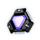

Mechanics
Character level plays a surprisingly modest role in combat compared to how your cooldown rings,  O.C.ギア color chains, appendage multipliers, and defensive buffs interact. Understanding the handful of core systems on this page lets you turn ordinary store-bought equipment into a setup that comfortably handles Tyrants twenty levels higher than your party.
O.C.ギア color chains, appendage multipliers, and defensive buffs interact. Understanding the handful of core systems on this page lets you turn ordinary store-bought equipment into a setup that comfortably handles Tyrants twenty levels higher than your party.
Cooldowns
Waiting an extra couple of seconds for an Art's outer green or white ring to fill multiplies its damage or buff potency dramatically, while クイックリキャスト lets you fire emergency skills on demand. Use the breakdown below to know when to hold an Art for maximum impact and when to spend green gauge energy.
- 通常リキャスト. Base recharge ring after using an Art.
- ダブルリキャスト. Green outer ring that charges ONLY while the character is actively holding the matching weapon type (Melee weapon drawn for Melee-weapon Arts. Ranged weapon drawn for Ranged-weapon Arts). Grants bonus damage, extra hits, or higher buff tiers (e.g., Ghostwalker Decoy IV -> Decoy V).
- トリプルリキャスト. White third ring available ONLY during ground
 オーバークロックギア. Charges automatically for ALL 8 Arts on the palette regardless of which weapon is currently drawn, granting massive extra multipliers or immediate recast.
オーバークロックギア. Charges automatically for ALL 8 Arts on the palette regardless of which weapon is currently drawn, granting massive extra multipliers or immediate recast. - クイックリキャスト. Unlocked during Chapter 3 at 風波の要塞. Press Y on any cooling-down Art to spend auxiliary energy from the segmented light-green gauge and fire the Art immediately. Pressing Y on an already-recharged Art consumes energy to immediately trigger its ダブルリキャスト, or トリプルリキャスト during Overdrive. Measured in auxiliary energy units: 1 unit = 1 second of remaining cooldown (rounded up). Each UI bar segment equals 20 units. Players start with 80 units (4 segments). Each of the 40 collectible エネルギーストレージ adds +4 max units, up to a maximum cap of 240 units (12 segments). Cooldown-reduction traits like Secondary Accelerator reduce energy cost proportionally. Auxiliary energy stays fixed during standard combat (except in Time Attack / Point Attack with the toggle enabled), but refills 100% instantly every time combat ends. After completing 第13章 後編 英雄, Quick Cooldown also unlocks for Skell combat at double energy cost (2 units per second of remaining cooldown), sharing the same gauge.
オーバークロックギア
Unlocked after Chapter 5,  O.C.ギア is the centerpiece of mid- and late-game ground combat, accelerating your cooldowns while scaling your damage up to 6x as the hit counter climbs toward 100. Learning which Art colors extend the timer and build TP turns a brief 25-second burst into an infinite loop that lasts the entire boss fight. Unlocked after completing 第5章 マ・ノンの民. Costs 3,000 TP to activate, base duration is 25 seconds. Pressing the Overdrive button again at 3,000 TP before time runs out resets the base timer while keeping the current counter.
O.C.ギア is the centerpiece of mid- and late-game ground combat, accelerating your cooldowns while scaling your damage up to 6x as the hit counter climbs toward 100. Learning which Art colors extend the timer and build TP turns a brief 25-second burst into an infinite loop that lasts the entire boss fight. Unlocked after completing 第5章 マ・ノンの民. Costs 3,000 TP to activate, base duration is 25 seconds. Pressing the Overdrive button again at 3,000 TP before time runs out resets the base timer while keeping the current counter.
- Green · 支援. Extends Overdrive timer by +(0.05 * Counter) seconds (+5.0s at Counter 100, applies per party member hit for AoE buffs).
- Blue · オーラ. Extends Overdrive timer by +(0.10 * Counter) seconds (+10.0s at Counter 100).
- Purple · 弱体. Generates +(10 * Counter) TP per hit (+1,000 TP per hit at Counter 100, primary engine for refilling 3,000 TP).
Color Transitions
| Transition | Bonus |
|---|---|
| Green -> Orange / Yellow / Purple | Doubles hit count added to the Overdrive counter |
| Yellow <-> Orange | Counter holds steady |
| Purple -> Orange / Yellow | Boosts appendage damage by +25% |
| Blue -> Green | Restores 10% of Max HP |
| Blue -> Purple | Increases debuff duration/effect by +25% |
| Orange -> Orange -> Orange | Grants stacking +10% combat EXP bonus |
| Yellow -> Yellow -> Yellow | Grants stacking +10% Class EXP bonus |
Party Chain Bonuses
| Active Members | Party Bonus |
|---|---|
| 2 | +50% Soul Voice trigger rate |
| 3 | +50 TP gained per auto-attack hit |
| 4 | Party-wide Supercharge + 50% incoming damage reduction (half damage taken) |
部位硬度 &  インサイドブレイカー
インサイドブレイカー
Every enemy body part carries a hidden hardness rating that governs how much bonus damage you deal when locking onto it. Pairing  パーツクラッシャー augments with
パーツクラッシャー augments with  インサイドブレイカー turns that hidden system into a permanent 6.25x damage boost, as detailed in the multiplier scale below.
インサイドブレイカー turns that hidden system into a permanent 6.25x damage boost, as detailed in the multiplier scale below.
 パーツクラッシャー. Each Appendage Crusher (or Crush.APPEND XX on Skells) lowers the targeted appendage's Hardness by 1 tier, stacking up to 5 times (flooring Hardness at -5). On a 0-Hardness appendage, 5x Appendage Crusher converts 1.00x into an independent 2.50x damage multiplier. Applies exclusively when targeting an enemy appendage.
パーツクラッシャー. Each Appendage Crusher (or Crush.APPEND XX on Skells) lowers the targeted appendage's Hardness by 1 tier, stacking up to 5 times (flooring Hardness at -5). On a 0-Hardness appendage, 5x Appendage Crusher converts 1.00x into an independent 2.50x damage multiplier. Applies exclusively when targeting an enemy appendage.
 インサイドブレイカー.
インサイドブレイカー.  サイシーカー Rank 10 Skill. Applies exclusively to Ether-attribute ground attacks while targeting an unbroken appendage. Prevents appendages from taking break damage while multiplying primary HP damage by an independent 2.5x (+150% at Lv. 5). Combined with 5x Appendage Crusher on a 0-Hardness appendage: 2.5 * 2.5 = 6.25x independent damage multiplier that never breaks the weak-point appendage.
サイシーカー Rank 10 Skill. Applies exclusively to Ether-attribute ground attacks while targeting an unbroken appendage. Prevents appendages from taking break damage while multiplying primary HP damage by an independent 2.5x (+150% at Lv. 5). Combined with 5x Appendage Crusher on a 0-Hardness appendage: 2.5 * 2.5 = 6.25x independent damage multiplier that never breaks the weak-point appendage.
| Hardness | Multiplier | Tier |
|---|---|---|
| +5 | 0.10x | |
| +4 | 0.25x | |
| +3 | 0.50x | |
| +2 | 0.75x | |
| +1 | 0.85x | |
| +0 | 1.00x | Standard baseline and fixed value of enemy Main Body |
| -1 | 1.15x | |
| -2 | 1.25x | |
| -3 | 1.50x | |
| -4 | 2.00x | |
| -5 | 2.50x | Hardness floor (maximum 2.5x multiplier) |
Stats & Defensive Layers
Raw HP and Defense get overwhelmed quickly by late-game attacks, whereas stacking  フェイクボディ,
フェイクボディ,
 格闘力. All non-TP Melee Arts and Melee auto-attacks.
格闘力. All non-TP Melee Arts and Melee auto-attacks.
 射撃力. All non-TP Ranged Arts and Ranged auto-attacks.
射撃力. All non-TP Ranged Arts and Ranged auto-attacks.
潜在力. ALL TP Arts (marked [TP], costing 1,000 TP) regardless of weapon type (e.g., Blossom Dance, Executioner, Hundred Shells, Galactic Cataclysm, Trident Buster, Ether Blast), plus Soul Voice and Green Art healing. Because TP Arts carry dramatically higher internal scaling multipliers than non-TP Arts, stacking 潜在力アップ XX (+50) and 潜在力ブースト XX (+25%) yields the highest burst damage in ground combat.
 フェイクボディ. Granted by ゴーストウォーカー (self, up to Decoy V = 6 hits on Secondary CD / Decoy VI = 7 hits on Tertiary CD) and ゴーストステージ (party, 1,000 TP). Negates 100% of damage and hit-debuffs regardless of enemy accuracy or attribute, consuming 1 charge per incoming hit. Vulnerable only to rapid multi-hit gatling/swarm attacks stripping charges faster than Ghostwalker recasts (note: lower-tier Ghost Factory cannot overwrite an active higher-tier Ghostwalker Decoy).
フェイクボディ. Granted by ゴーストウォーカー (self, up to Decoy V = 6 hits on Secondary CD / Decoy VI = 7 hits on Tertiary CD) and ゴーストステージ (party, 1,000 TP). Negates 100% of damage and hit-debuffs regardless of enemy accuracy or attribute, consuming 1 charge per incoming hit. Vulnerable only to rapid multi-hit gatling/swarm attacks stripping charges faster than Ghostwalker recasts (note: lower-tier Ghost Factory cannot overwrite an active higher-tier Ghostwalker Decoy).
反射. Activated by ストロングシールド (Physical), ライジン (Electric), or ギャラクシークロス (Beam). While ANY Reflect Aura is active, equipping Reflect: 反射＋物理 augments or innate swimmer/torso Reflect traits expands the Aura to reflect 100% of those additional attributes simultaneously. Countered only by specific superboss Arts coded with natural Reflect-pierce.
属性耐性. Each point of Physical, Beam, Ether, Thermal, Electric, or Gravity Resistance reduces incoming damage of that attribute by 1%. Reaching 100 Resistance reduces all hits of that attribute to 1 damage (unless debuffed by Res Down). スタープロテクション adds +50 to all 6 resistances at Lv. 5, requiring only 50 on armor/augments for near-immunity.
ドール保険
Repairing a wrecked ドール out of pocket can drain most of your savings once its insurance counter runs dry. Knowing how ejection prompts and AI pilot rules preserve your insurance tickets keeps hangar salvage completely free.
- Base Counts. 3 insurance points on all shop and crafted Lv. 20/30/50/60 Skells, 10 insurance points on Ares 90 and Ares Prime.
- Ejection QTE. When a player-piloted Skell hits 0 HP, a Soul Challenge ejection QTE triggers. Hitting Perfect repairs the Skell at the BLADE Barracks Hangar for free with ZERO insurance consumed. Hitting Good or Miss consumes 1 insurance point for a free repair.
- AI Pilots. AI-controlled party members automatically score Perfect on every Skell destruction QTE. Therefore, handing a Skell with AT LEAST 1 insurance remaining to an AI companion allows them to pilot and wreck it indefinitely without ever consuming that last insurance point. If a Skell is already at 0 insurance, there is no policy left for the AI's Perfect QTE to preserve, if an AI wrecks a 0-insurance Skell, you MUST pay the full credit salvage fee (~70% of Skell + weapon cost) or spend a サルベージチケット.
- Free Salvage. In XCX:DE, Skells destroyed by 消失現象 and all Skells wrecked during 第13章 後編 英雄 are repaired free of charge without consuming insurance.
Switch 2
Playing on Switch 2 upgrades resolution, frame rate stability in busy NLA plazas, and fast-travel asset streaming while keeping full save compatibility with the standard Switch release.
- Release. Digital release and Switch 2 Upgrade Pack ($4.99 USD): February 19, 2026. Standalone physical retail release: April 16, 2026 (following the original Switch 1 Definitive Edition launch on March 20, 2025).
- Output. Targets up to 4K resolution in docked TV mode (1080p in handheld mode) and doubles the framerate target from 30 FPS to 60 FPS across exploration and combat.
- Streaming. Substantially faster スキップトラベル, BLADE Barracks transitions, and Return to ドールへ戻る farming reloads compared to Switch 1 and Wii U.